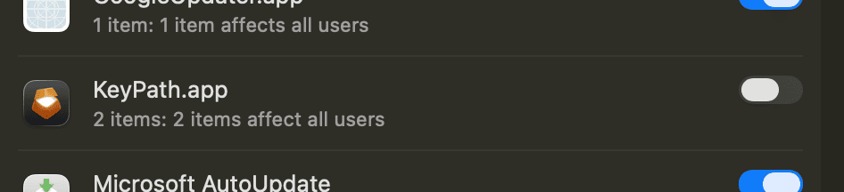
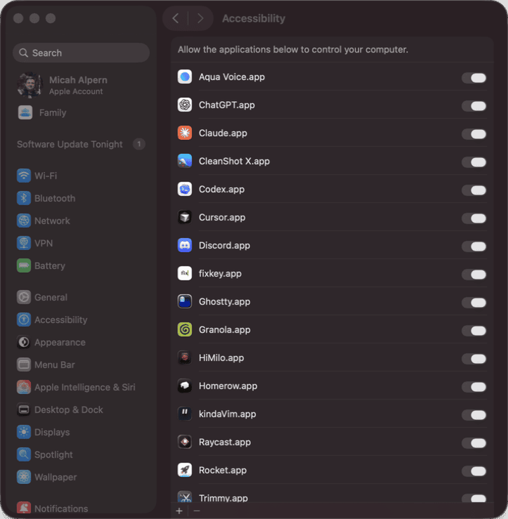
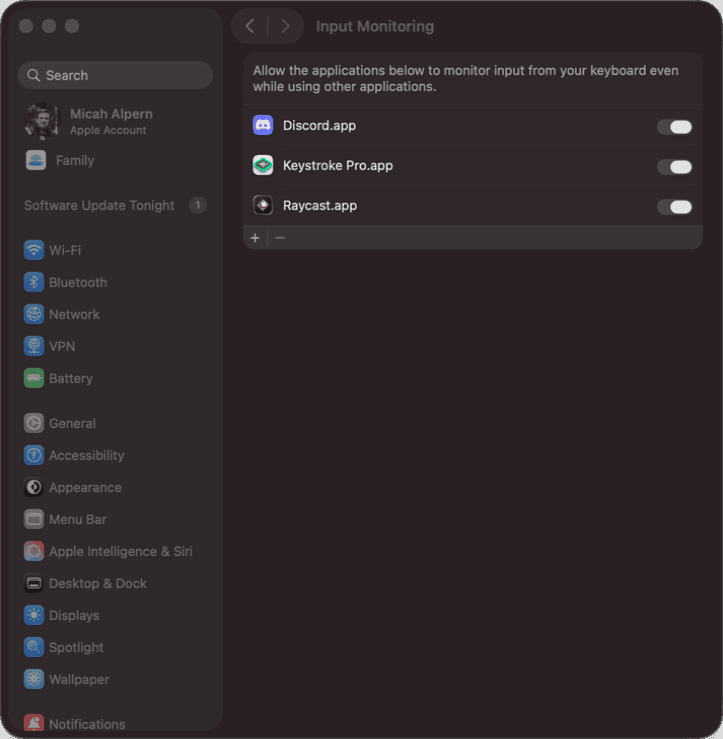

In two minutes, your keyboard will be able to launch apps, tile windows, fire shortcuts without reaching, and remap any key — all from the home row. This guide walks you through each step of the setup wizard and explains what's happening behind the scenes.
Once setup is complete, KeyPath gives you:
Want to see what's possible before you start? Check out What You Can Build.
⚠️ Watch out: Karabiner-Elements grabs the same low-level keyboard APIs that KeyPath needs. Quit it from the menu bar icon before continuing. You can always switch back later — see From Karabiner-Elements.
KeyPath's wizard opens automatically on first launch. It detects what's needed, walks you through each step, and checks your progress. This guide explains what's happening and why so nothing feels mysterious.
The wizard shows a Setup Overview with status indicators for each step. Green checkmarks mean done; orange or red icons mean action needed. Click Fix on any item to start that step.
The wizard's first action step. KeyPath needs to install a small privileged helper service that runs in the background and manages the keyboard remapping engine. This requires your admin password.
What happens: macOS shows an authorization prompt. Enter your password and click Install. This is a one-time step — you won't be asked again unless you uninstall and reinstall.

Screenshot — macOS authorization prompt: ┌─────────────────────────────────────┐
│ KeyPath wants to install a │
│ privileged helper. │
│ │
│ [Username] │
│ [••••••••••] │
│ │
│ [ Cancel ] [ Install ] │
└─────────────────────────────────────┘⚠️ Watch out: Clicking Cancel stops the installation. KeyPath can't remap keys without the helper. If this happens, re-run the wizard from File > Install wizard... (Shift+Cmd+N).
After installation, macOS may also ask you to approve KeyPath in Login Items under System Settings. If prompted, find KeyPath under "Allow in the Background" and toggle it ON.
The wizard calls this "Enhanced Diagnostics." Under the hood, it's macOS Full Disk Access — it lets KeyPath read the system permission database so it can accurately verify that all permissions are correctly set.
Without it: KeyPath still works, but some permission checks may show as "unverified" instead of a clear green checkmark or red X.
With it: Permission verification is precise, error messages are more helpful, and KeyPath can proactively detect issues.
💡 Tip: You can Skip this step. It's optional and you can always enable it later from System Settings > Privacy & Security > Full Disk Access.
Why: Accessibility permission lets KeyPath send remapped keystrokes to your apps. Without it, KeyPath can read your keys but can't write the new ones back.
This step has two components — both need to be granted:
KeyPath.app usually appears in the Accessibility list automatically. Toggle it ON.

Screenshot — System Settings > Privacy & Security > Accessibility: ┌──────────────────────────────────────────────┐
│ Privacy & Security > Accessibility │
│ │
│ Allow the apps below to control │
│ your computer. │
│ │
│ ┌──────────────────────────────────┐ │
│ │ 🔑 KeyPath.app [ ● ] │ ← ON │
│ └──────────────────────────────────┘ │
│ │
│ [ + ] │
└──────────────────────────────────────────────┘KeyPath uses a separate engine called kanata to do the actual keyboard remapping. Because kanata is a system binary (not a regular .app), it does not appear in the Accessibility list automatically. You have to add it manually.
When you click Fix in the wizard, two things happen:
Step by step:
/Library/KeyPath/bin//Library/KeyPath/bin/kanata and press EnterScreenshot — Using the + button and Go to Folder to find kanata:
┌─ System Settings ──────────────────────────────┐
│ │
│ Privacy & Security > Accessibility │
│ │
│ ┌───────────────────────────────────────┐ │
│ │ 🔑 KeyPath.app [ ● ] │ │
│ └───────────────────────────────────────┘ │
│ │
│ [ + ] ◄── 1. Click this │
│ │
│ ┌─ File Picker ──────────────────────────┐ │
│ │ │ │
│ │ Go to Folder: [/Library/KeyPath/bin/] │ │
│ │ ▲ │ │
│ │ 2. Cmd+Shift+G, │ │
│ │ type this path │ │
│ │ │ │
│ │ ┌────────────────────────────┐ │ │
│ │ │ ⚙ kanata ◄── 3. Select │ │ │
│ │ └────────────────────────────┘ │ │
│ │ │ │
│ │ [ Open ] ◄── 4. Click │ │
│ └────────────────────────────────────────┘ │
└─────────────────────────────────────────────────┘⚠️ Watch out: The kanata binary looks like a plain executable icon, not like an app. That's normal — it's a command-line binary, not a .app bundle. After you add it, it may appear as "kanata" with a generic Terminal-style icon in the list.
💡 Tip: The wizard also opens a Finder window showing kanata's location. This is for reference so you know you're adding the right file. The actual adding happens through the + button in System Settings.
Why: Input Monitoring lets KeyPath read which keys you press. This is the counterpart to Accessibility — together they form the read/write pair that makes remapping work. For a deeper look at why both are needed, see Privacy & Permissions.
Same two-component process as Accessibility:
KeyPath.app should appear in the Input Monitoring list. Toggle it ON.
Same process as Accessibility — kanata is a system binary and won't appear automatically.
/Library/KeyPath/bin/kanata, press Enter
Screenshot — System Settings > Privacy & Security > Input Monitoring after adding both: ┌──────────────────────────────────────────────┐
│ Privacy & Security > Input Monitoring │
│ │
│ Allow the apps below to monitor │
│ input from your keyboard. │
│ │
│ ┌──────────────────────────────────┐ │
│ │ 🔑 KeyPath.app [ ● ] │ ← ON │
│ │ ⚙ kanata [ ● ] │ ← ON │
│ └──────────────────────────────────┘ │
│ │
│ [ + ] │
└──────────────────────────────────────────────┘⚠️ Watch out: macOS cannot grant these permissions automatically. No app can flip its own toggles — Apple requires you to do it manually in System Settings. The wizard opens the right pane and shows you the binary, but the clicking and dragging is up to you.
💡 Tip: After granting permissions, macOS sometimes needs KeyPath to restart before it recognizes the change. If the wizard still shows a warning after toggling, try quitting KeyPath (Cmd+Q) and reopening it.
The wizard verifies that the kanata remapping engine is properly installed at /Library/KeyPath/bin/kanata. This step is usually automatic — the privileged helper installed it in Step 1.
If something went wrong (file missing or corrupted), click Fix and the wizard reinstalls it.
The final step. The wizard starts the KeyPath Runtime, powered by the Kanata engine in the background. Once it is running, your key remappings are active system-wide.
The wizard shows a live status indicator:
After the wizard completes and returns to the Setup Overview with all green checkmarks, look at the overlay in the bottom-center of your screen:
Screenshot — Overlay header with green health indicator:
┌──────────────────────────────────────────────┐
│ ● KeyPath Base Layer │
└──────────────────────────────────────────────┘
▲
Green dot = service running, permissions OKQuick test: The default configuration maps Caps Lock to Escape. Press Caps Lock — if it fires Escape (try it in a text field or Terminal), remapping is active.
| Problem | Fix |
|---|---|
| Kanata doesn't appear in Finder when clicking Fix | The binary may not be installed yet. Go back to the Kanata Engine Setup step and click Fix to install it first. |
| Dragged kanata to the list but it didn't appear | Try the + button instead: click +, press Cmd+Shift+G, type /Library/KeyPath/bin/kanata, press Enter, click Open. |
| Toggle is ON but wizard still shows a warning | Quit KeyPath completely (Cmd+Q), reopen it. macOS sometimes needs a fresh app launch to recognize new permissions. |
| Service not starting (red indicator) | Open File > Install wizard... and re-run the Privileged Helper step. |
| Karabiner conflict detected | The wizard's Resolve Conflicts step handles this — click Fix to quit conflicting processes. Or quit Karabiner-Elements from its menu bar icon manually. |
| KeyPath.app doesn't appear in permission lists | Restart your Mac. In rare cases macOS needs a reboot to register new apps in Privacy settings. |
| Permissions granted but keys aren't remapped | Check the overlay — is it showing "Base Layer"? If so, the service is running but your config may not have rules yet. Try the Caps Lock to Escape test above. |
💡 Tip: You can always re-run the setup wizard from File > Install wizard... (Shift+Cmd+N). It picks up where you left off and only shows steps that still need attention.
You're set up! Here are the best places to go from here: